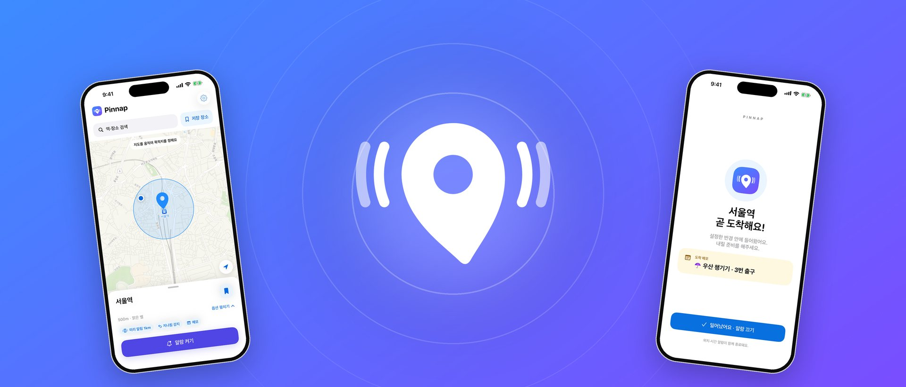
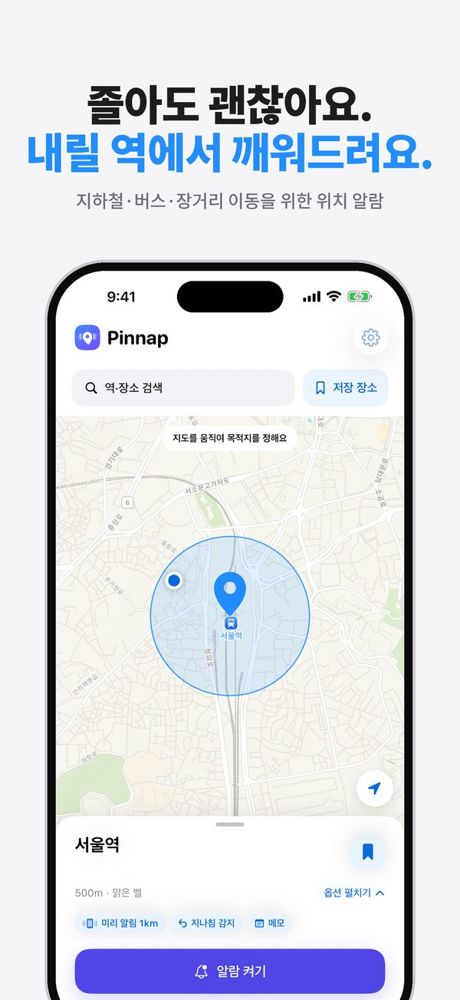
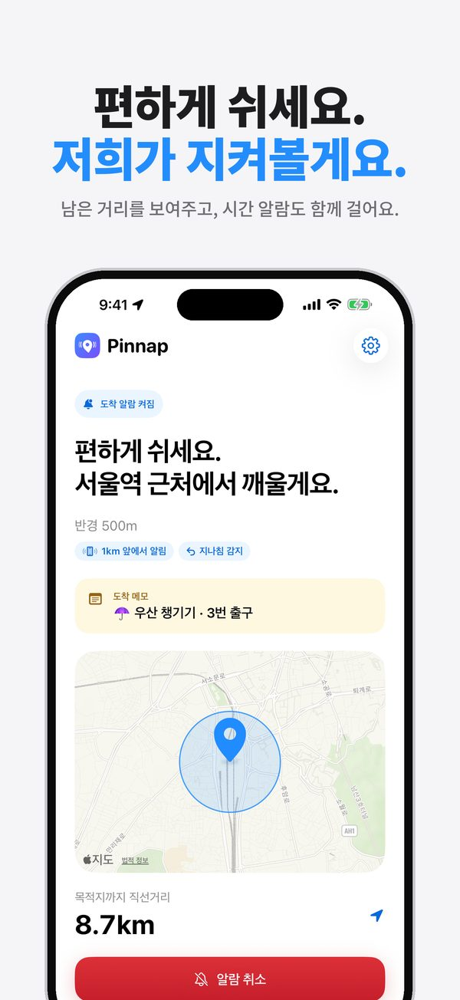
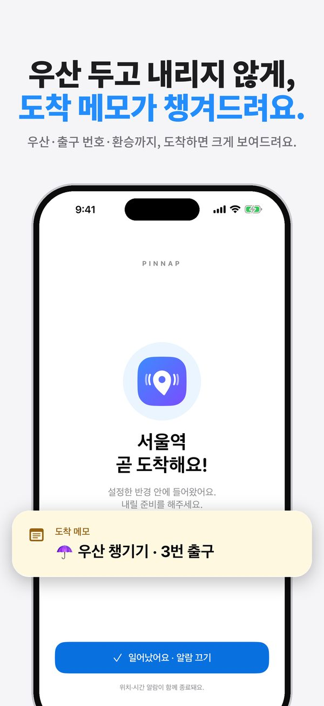
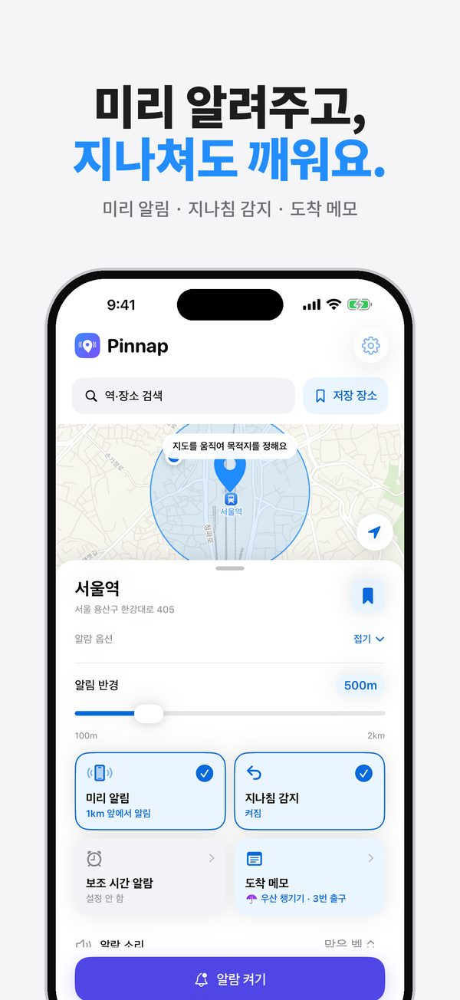
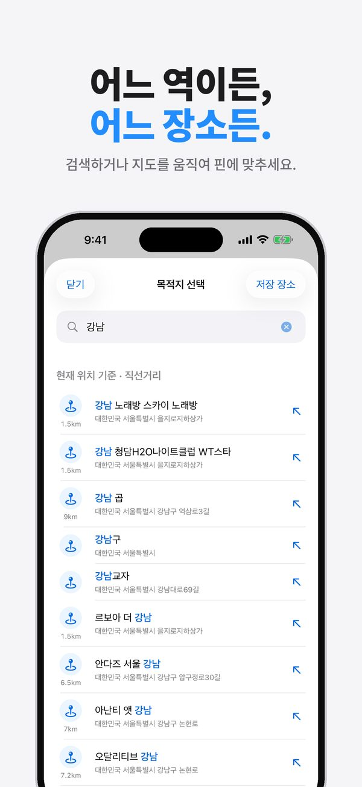
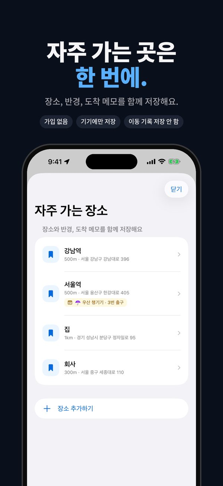

Pinnap: 도착 알람 - 하차 알림
지하철, 버스, 기차에서 깜빡 잠들어도 괜찮아요. 내릴 곳에 핀을 꽂아두면, 가까워졌을 때 무음 모드에서도 진짜 알람으로 깨워드려요.
App Store에서 Pinnap 받기무료 · iPhone, iOS 26 이상







확실하게 깨워주는 도착 알람
지도에서 바로 정하기
지도를 움직여 핀을 맞추거나 역·장소를 검색하세요. 알림 반경은 100m부터 2km까지 정할 수 있어요.
무음 모드에서도 울려요
반경에 들어오면 iPhone 시스템 알람이 울려요. 잠금 화면에서 바로 끌 수 있어요.
도착 전 미리 알림
내리기 조금 전에 알림을 보내드려요. 짐을 챙길 시간이 생겨요.
지나침 감지
내릴 곳을 지나쳐 멀어지면 바로 알려드려요.
도착 메모
“우산 챙기기 · 3번 출구”처럼 메모를 남겨두면 도착할 때 보여드려요.
보조 시간 알람
터널이나 지하 구간이 걱정되면 정한 시간에도 울리도록 함께 걸어두세요.
위치는 iPhone 안에서만
목적지까지의 거리 계산은 모두 iPhone 안에서 해요. 계정도, 위치를 받는 서버도 없어요. 알람이 켜져 있을 때만 위치를 확인하고 — 멀리 있을 때는 드물게, 가까워지면 정확하게 — 알람을 끄면 바로 멈춰요.
무료
Pinnap은 무료이고 광고가 있어요. 화면 하단 배너와 알람을 끈 직후의 광고가 나오며, 알람이 울리는 중에는 광고가 나오지 않아요.
자주 묻는 질문
무음 모드에서도 알람이 울리나요?
네. iPhone 시스템 알람을 쓰기 때문에 무음 모드에서도 울리고, 잠금 화면에서 바로 끌 수 있어요.
도착은 어떻게 판단하나요?
목적지를 중심으로 정한 반경 안에 들어왔는지 직선거리로 판단해요. 경로나 시간표를 예측하지 않아요.
터널이나 지하에서 GPS가 끊기면요?
반경을 넉넉하게 잡고 보조 시간 알람을 함께 걸어두세요. 위치 확인이 늦어져도 정한 시간에 울려요.
이미 목적지 근처인데 알람을 켤 수 있나요?
이미 반경 안에 있으면 알람이 바로 울리지 않도록, 목적지를 옮기거나 반경을 줄여달라고 안내해요.